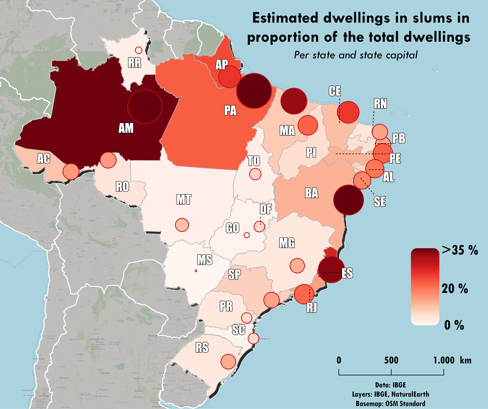

Barrios Marginales - ODS 11.1.1
El Instituto Brasileño de Geografía y Estadística (IBGE) y la Secretaría Especial de Articulación Social, en colaboración con otras instituciones, son responsables de monitorizar el estado y la evolución de los ODS en Brasil. En este sentido, los barrios marginales son un fenómeno conocido en Brasil, especialmente las favelas en Río de Janeiro. Sin embargo, estos se distribuyen en todo el país.
La formación de barrios marginales y el proceso de urbanización están estrechamente relacionados. Ambos indicadores se han estudiado independientemente, pero hasta ahora, no hay estudios que vinculen los barrios marginales y la tasa de consumo de tierras en relación con la tasa de crecimiento de la población.
Los Barrios Marginales en las mayores regiones metropolitanas
Los primeros hallazgos del estudio mostraron que Río de Janeiro era la región con más área cubierta por barrios marginales en ambos años estudiados, con poco más de 120 km². No obstante, fue la única área donde el total del área de los barrios marginales disminuyó, concretamente en un 2.1%. Al contrario, São Paulo fue la segunda región con más área de barrios marginales, el área aumentó en un 37% en el periodo 2010-2019, obteniendo el crecimiento más sustancial.
Respecto a los resultados de la población, la región estudiada con el mayor número de habitantes viviendo en barrios marginales fue São Paulo, seguida de Río de Janeiro y Belo Horizonte. Belo Horizonte aumentó su población en barrios marginales en un 14.9% durante el periodo 2010-2019, mientras que en Río de Janeiro aumentó un 13.5% y en São Paulo un 21.7%.

A nivel de municipio, los municipios con el mayor porcentaje de población viviendo en barrios marginales son las capitales de las regiones metropolitanas o los municipios circundantes. Desde 2010 hasta 2019, algunos municipios redujeron o aumentaron su proporción de población viviendo en barrios marginales.